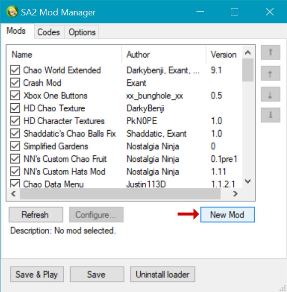
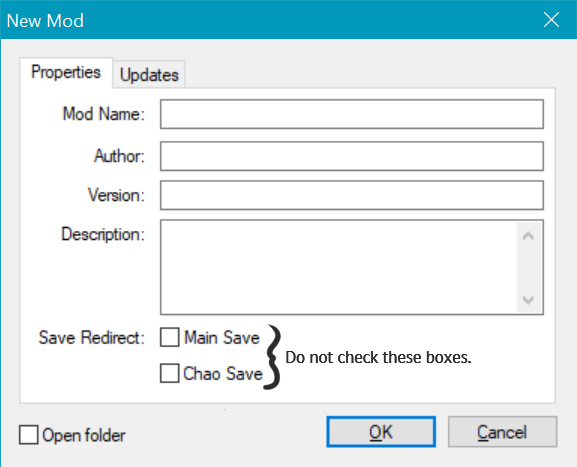
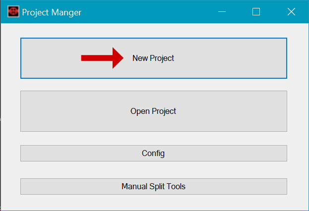
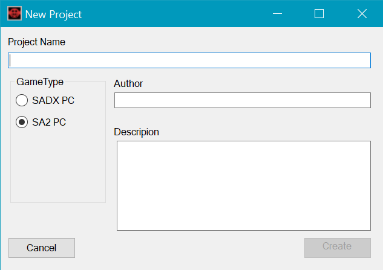
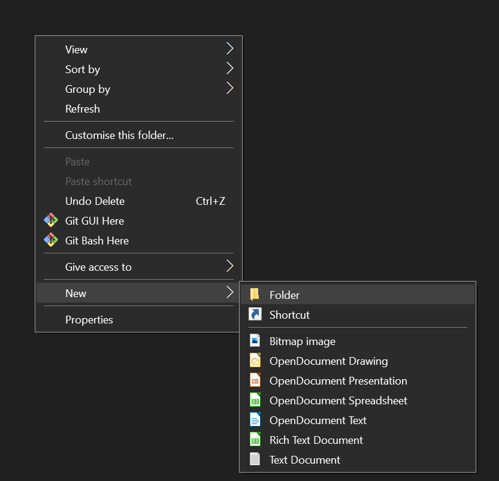
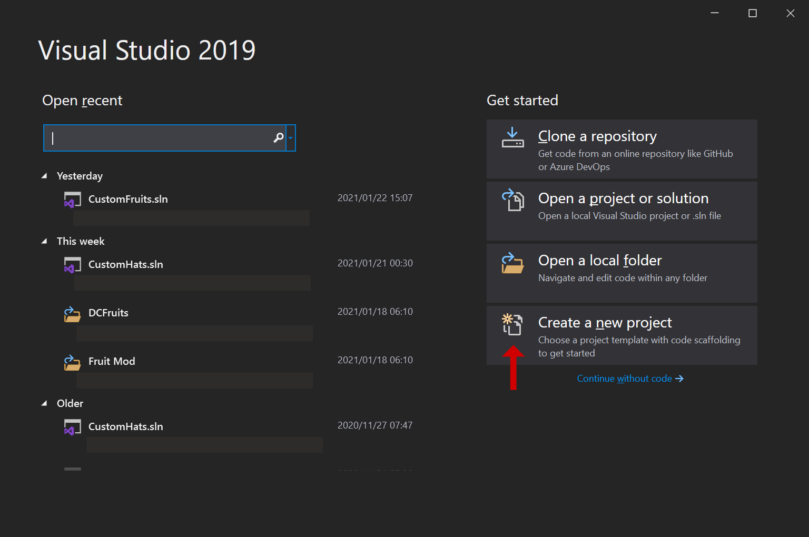
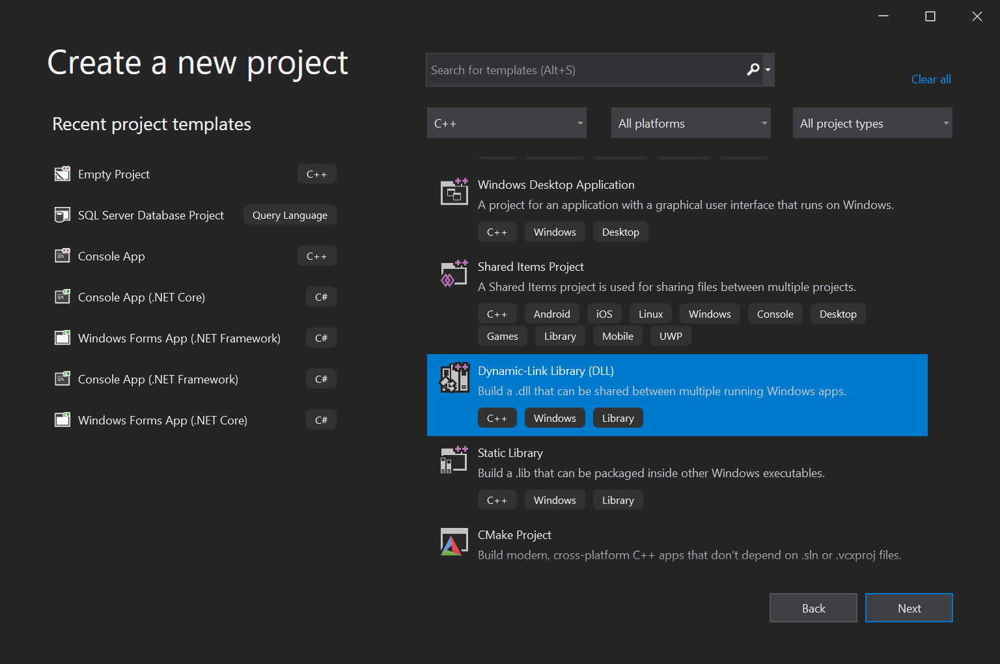
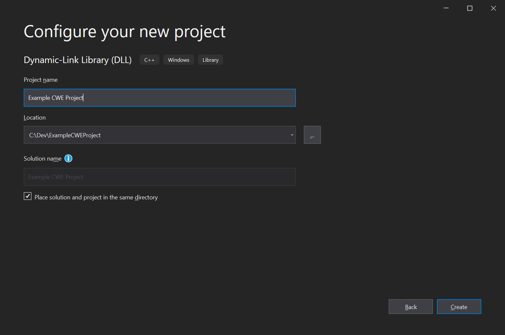
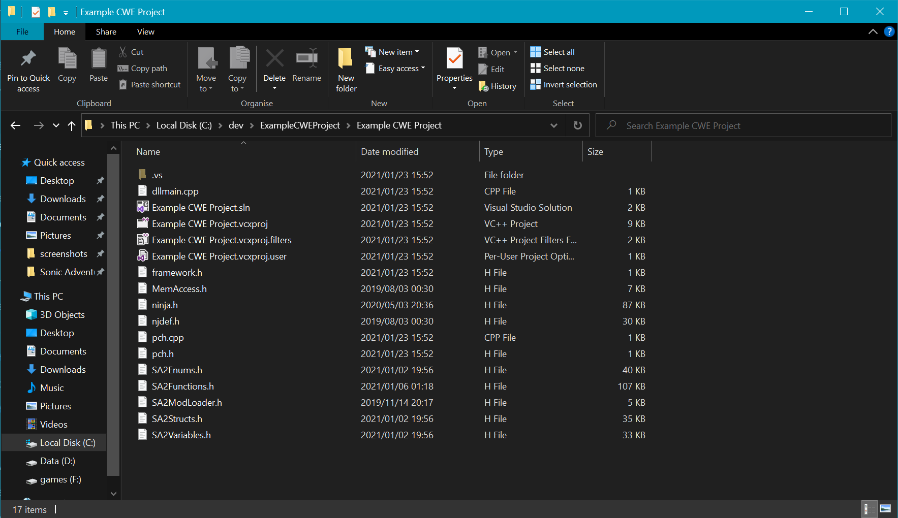

Creating a DLL project
In order to get started on making either of the mods, you will need to create a DLL project for the mod to work in Sonic Adventure 2.
Pre-requisites:
- SA2 Modloader
- SA Tools
- Visual Studio (We will be using 2019 community edition for this) with "Deskop development with C++" installed.
After the pre-requisites have been installed, we may proceed to making a mod folder, and then setting up the Visual Studio project to start creating the mod.
Mod Setup method 1: SA2 Modloader
Open the SA2 Modloader and click on the "New Mod" button.
Fill in the Name, Author, Version and Description of the mod. Do not check the checkboxes in the "save redirect" section.
Once done, your mod should appear in the modloader.

A note for this method: It excludes a property in the mod.ini file which will be needed (and added) later when the project is complete.
Mod Setup method 2: SA Tools
This method is not recommended as it extracts the whole contents of Sonic Adventure 2 for modification, but is provided for the purposes of creating a mod which can be sorted in SA Tools. This will still be needed if you are making a hat mod as we will be extracting a model for later use. If you are making a fruit mod, you can skip this step.
Once SA Tools has been extracted, go to ProjectManager and run the ProjectManager.exe - This should open the Project Manager. Click the "New Project" button to start the mod creation process.
Select the GameType as SA2 PC and fill out your project name, author and description. Click "Create." SA Tools will then create a project folder in your Sonic Adventure 2 folder for you.
When the mod is completed, you can use the "Auto Build" button to create a mod in the "mods" folder in Sonic Adventure 2. Opening the project folder will take you to the SA2 Projects folder where you will see the mod.ini file, which has the minimal for a mod required to run.
Mod Setup method 3: Manual method.
This method is the simplest method to create a mod, since there are no tools required to create a folder.
Go to your Sonic Adventure 2/Mods folder, right click and go to New->Folder. Name the folder the name of the mod.
Inside the folder you just created, right click and go to New->Text Document. rename the text document "mod.ini" - You may need to check the "Show file name extensions" in the view ribbon to see the extension show up. open the new "mod.ini" file.
Inside, you will need to write the following code to get started:
Name=
Author=
Version=1.0
Description=
DLLFile=
Fill out the details that you need (leave DLLFile alone for now, since that will be needed for the end of the modding process.) and save the file. Congratulations! You've made a mod.
Setting Up the Visual Studio Project:
Credit goes to Kells for setup of the environment - Guide
Open Visual Studio 2019 and click the "Create a new project" button on the right.
Select "C++" as project type and select "Dynamic Link Library(DLL)"
Name your project, and place it in a memorable location. In my case, I used "C:\dev\ExampleCWEProject" but you can place it anywhere you like, provided you can get to it easily.
Once the project has been named, click "create" and let Visual Studio create the project for you.
Setup Modloader includes.
Open the "Programming" folder that was shipped with SA2 Modloader and copy all the files inside to your Visual Studio project folder. Your VS Project folder should look like the following:
Either go to Project->Build Solution, or press F6 to build the project. If the status bar says "Build succeeded", then you're good to go, otherwise if you have problems, then make sure that:
- You are in an x86 build configuration
- You installed the "Desktop Development with C++" Visual Studio module
- That in the properties of the project (Project -> Properties) you are using a valid SDK and Toolset
We are now done setting up the DLL project to get started with the modding project of your choice! Go back to the home page and pick either fruit or hat modding to continue.